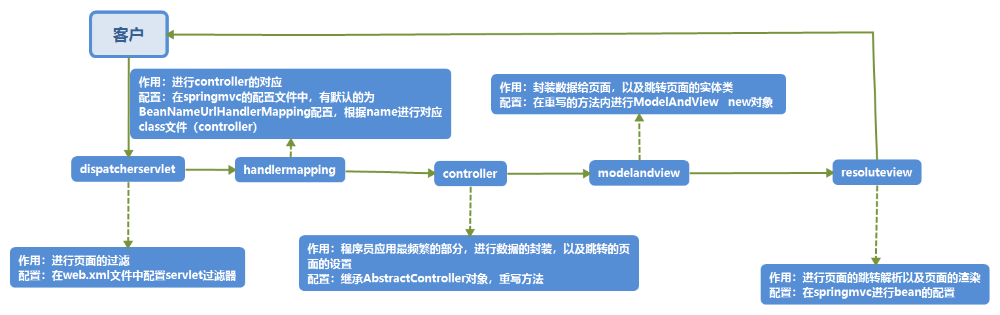
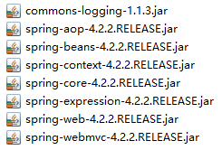
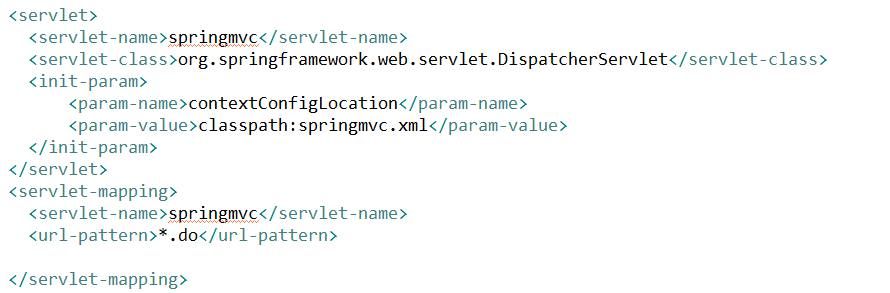
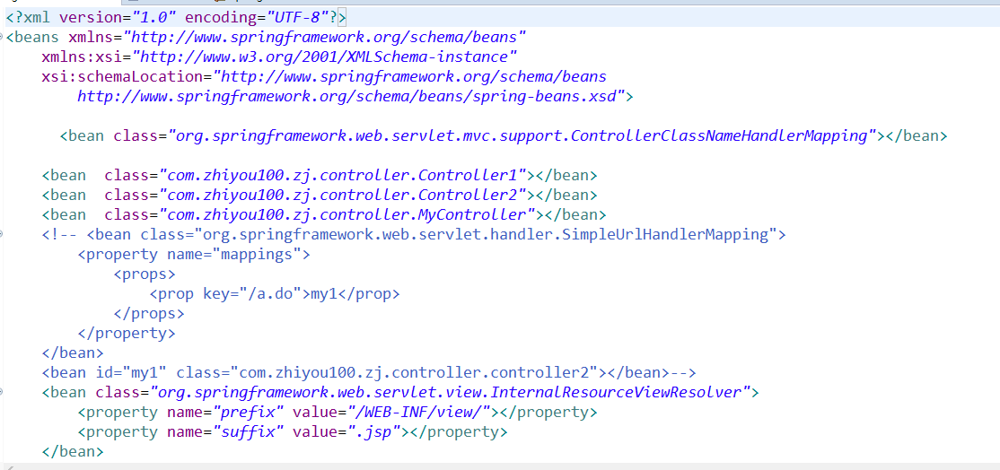
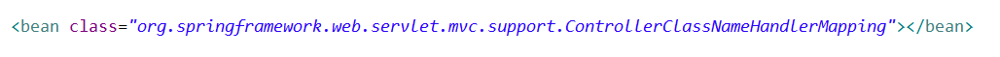
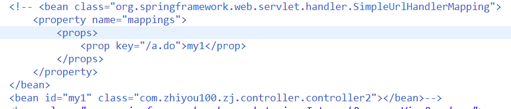
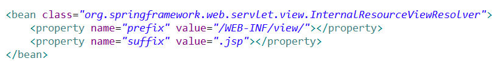
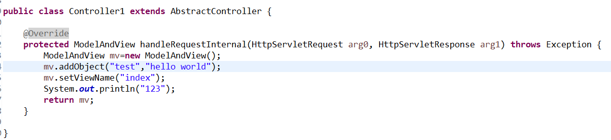

springmvc:是完成数据的封装和跳转的功能
流程图如下：

springmvc的配置流程
1、导入jar包

二、配置servlet文件

init-param的作用是在启动servlet启动时规定其地地址及名称去搜寻其springmvc配置文件
三、配置springmvc配置文件


进行handlermapping的配置，不进行配置时BeanNameUrlHandlerMapping，
handlermapping的三种方式
1、默认方式BeanNameUrlHandlerMapping，根据benan的属性name值寻找对应的controller（class）
2、ControllerClassNameHandlerMapping，根据controller名称进行对应，注意命名规则，地址栏上写最后的类名要全部小写，如果最后是controller，可以省略，也可以首字母不区分大小写
3、simpleurlHandlermappering，根据property的props的prop进行id的定位id，如下

配置视图解析器

三、controller配置
1、继承AbstractController
2、重写handleRequestInternal
3、在方法内进行modelandview的跳转，以及数据封装
